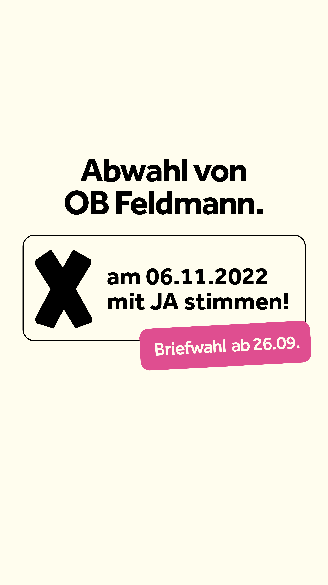
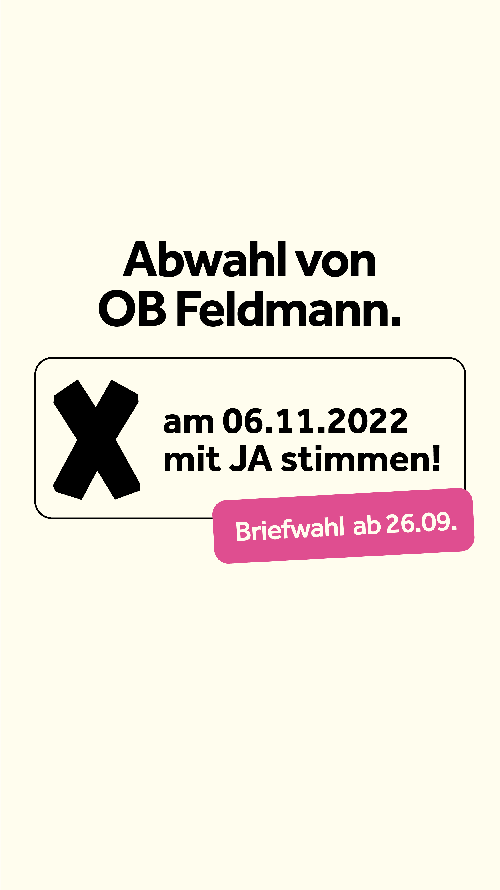

Hier informieren wir als Bündnis zur Abwahl des Oberbürgermeisters in Frankfurt am Main.


 

FAQ
Worum geht es eigentlich?
Am 14. Juli 2022 hat das Stadtparlament Frankfurt am Main in seiner 14. Sitzung die Abwahl des Oberbürgermeisters Peter Feldmann mit einer Zweidrittel-Mehrheit beschlossen. Somit wurde die Entscheidung, ob Peter Feldmann im Amt bleibt oder nicht, in die Hände der Bürgerinnen und Bürger gelegt. Diese können am 06.11. in dem Ihnen zugewiesenen Wahllokal, oder per Briefwahl, ihre Stimme abgeben. Weitere Informationen zur Wahl befinden sich auf frankfurt.de/wahlen.
Warum soll Peter Feldmann abgewählt werden?
Das Amt des Oberbürgermeisters vertritt die gesamte Stadt Frankfurt am Main und bedarf daher einer Person mit entsprechendem Ansehen. Herr Peter Feldmann hat dieses Ansehen durch diverse Fehltritte und durch wiederholtes Fehlverhalten verloren.
Was hat Peter Feldmann eigentlich getan?
Peter Feldmann nutzt offizielle Kommunikationskanäle, um private Meinungen zu äußern und öffentliche Auftritte, um sich persönlich daran zu bereichern. So nahm er sich den Europa-League-Pokal der Frankfurter Eintracht, weil er nach eigener Aussage „den Pokal unbedingt anfassen wollte“ und „erschrak“, nach eigener Aussage, selbst vor den sexistischen Aussagen, die er am Tag zuvor dem weiblichen Flugpersonal auf dem Rückflug nach Frankfurt machte (s. Pressekonferenz 25.05.2022). Er scheint nicht mehr zwischen seiner Person und seinem Amt zu unterscheiden.
Der Eindruck wird dadurch verstärkt, dass Peter Feldmann außerdem zurzeit wegen des Verdachts auf Vorteilsannahme vor Gericht steht. Ihm wird vorgeworfen, seiner Frau eine Anstellung mit überdurchschnittlicher Vergütung durch sein Amt als Oberbürgermeister ermöglicht zu haben. Natürlich gilt die Unschuldsvermutung, bis es zu einer möglichen Verurteilung oder Freisprechung kommt, jedoch wurde bereits zum Prozessbeginn deutlich, dass Peter Feldmann sein Amt nicht mehr erfüllen kann. Er musste bei der Begrüßung des spanischen Königs zur Buchmesse 2022 vertreten werden, weil er am gleichen Tag wegen seines Verfahrens vor Gericht erscheinen musste.
Impressum / Nutzungsbedingungen
Angaben gemäß § 5 TMG:
FDP Kreisverband Frankfurt am Main
Niddastraße 108
60329 Frankfurt am Main
Vertreten durch: Dr. Thorsten Lieb, Kreisvorsitzender
Kontakt:
T: 069/590955
E: info@fdp-frankfurt.de
Nutzungsbedingungen:
I. Disclaimer/Haftung für Inhalte
Als Diensteanbieter sind wir gemäß § 7 Abs.1 TMG für eigene Inhalte auf diesen Seiten nach den allgemeinen Gesetzen verantwortlich. Nach §§ 8 bis 10 TMG sind wir als Diensteanbieter jedoch nicht verpflichtet, übermittelte oder gespeicherte fremde Informationen zu überwachen oder nach Umständen zu forschen, die auf eine rechtswidrige Tätigkeit hinweisen.
Verpflichtungen zur Entfernung oder Sperrung der Nutzung von Informationen nach den allgemeinen Gesetzen bleiben hiervon unberührt. Eine diesbezügliche Haftung ist jedoch erst ab dem Zeitpunkt der Kenntnis einer konkreten Rechtsverletzung möglich. Bei Bekanntwerden von entsprechenden Rechtsverletzungen werden wir diese Inhalte umgehend entfernen.
II. Haftung für Links
Unser Angebot enthält Links zu externen Websites Dritter, auf deren Inhalte wir keinen Einfluss haben. Deshalb können wir für diese fremden Inhalte auch keine Gewähr übernehmen. Für die Inhalte der verlinkten Seiten ist stets der jeweilige Anbieter oder Betreiber der Seiten verantwortlich. Die verlinkten Seiten wurden zum Zeitpunkt der Verlinkung auf mögliche Rechtsverstöße überprüft. Rechtswidrige Inhalte waren zum Zeitpunkt der Verlinkung nicht erkennbar.
Eine permanente inhaltliche Kontrolle der verlinkten Seiten ist jedoch ohne konkrete Anhaltspunkte einer Rechtsverletzung nicht zumutbar. Bei Bekanntwerden von Rechtsverletzungen werden wir derartige Links umgehend entfernen.
III. Urheberrecht
Die durch die Seitenbetreiber erstellten Inhalte und Werke auf diesen Seiten unterliegen dem deutschen Urheberrecht. Die Vervielfältigung, Bearbeitung, Verbreitung und jede Art der Verwertung außerhalb der Grenzen des Urheberrechtes bedürfen der schriftlichen Zustimmung des jeweiligen Autors bzw. Erstellers. Downloads und Kopien dieser Seite sind nur für den privaten, nicht kommerziellen Gebrauch gestattet.
Soweit die Inhalte auf dieser Seite nicht vom Betreiber erstellt wurden, werden die Urheberrechte Dritter beachtet. Insbesondere werden Inhalte Dritter als solche gekennzeichnet. Sollten Sie trotzdem auf eine Urheberrechtsverletzung aufmerksam werden, bitten wir um einen entsprechenden Hinweis. Bei Bekanntwerden von Rechtsverletzungen werden wir derartige Inhalte umgehend entfernen.
IV. Haftungsbeschränkung
Die Inhalte dieser Internet-Seite werden kostenfrei zur Verfügung gestellt und wurden mit größtmöglicher Sorgfalt erstellt. Wir übernehmen keine Gewähr für die Richtigkeit, Vollständigkeit und Aktualität der bereitgestellten Inhalte und haften im Hinblick auf die Inhalte der Internet-Seite nur für Vorsatz und grobe Fahrlässigkeit.
Datenschutzerklärung
Im Folgenden informieren wir Sie über die Erhebung personenbezogener Daten bei Nutzung unserer Website neustartffm.de. Personenbezogene Daten sind alle Daten, die auf Sie persönlich beziehbar sind, z. B. Name, Adresse, E-Mail-Adressen, Seitenaufrufe.
§ 1 Verantwortlicher, Datenschutzbeauftragter, Auftragsverarbeiter
(1) Für die Verarbeitung personenbezogener Daten gem. Art. 4 Ziff. 7 EU-Datenschutz-Grundverordnung (DSGVO) ist die FDP Frankfurt am Main, Niddastraße 108, 60329 Frankfurt am Main, info@fdp-frankfurt.de verantwortlich.
(2) Den Datenschutzbeauftragten der FDP erreichen Sie unter datenschutz@fdp.de oder unter: Freie Demokratische Partei, Datenschutzbeauftragter, Reinhardtstraße 14, 10117 Berlin.
(3) Teilweise bedienen wir uns zur Verarbeitung Ihrer Daten externer Dienstleister. Diese wurden von uns sorgfältig ausgewählt und beauftragt, sind an unsere Weisungen gebunden und werden regelmäßig kontrolliert.
§ 2 Erhebung personenbezogener Daten
Beim Besuch unserer Website, wenn Sie uns nicht anderweitig Informationen übermitteln, erheben wir nur die personenbezogenen Daten, die Ihr Browser an unseren Server übermittelt. Diese Informationen werden temporär in einem sog. Logfile gespeichert. Folgende Informationen werden dabei ohne Ihr Zutun erfasst und bis zur automatisierten Löschung gespeichert:
- IP-Adresse
- Datum und Uhrzeit der Anfrage
- Zeitzonendifferenz zur koordinierten Weltzeit (UTC)
- vom Webbrowser übermittelte Anforderung, bestehend aus Anforderungsmethode (z.B. GET), angeforderter Seite oder Ressource, Protokollversion (z.B. HTTP/1.1)
- Zugriffsstatus/HTTP-Statuscode (z.B. 404 für „Seite nicht gefunden“)
- jeweils übertragene Datenmenge
- Seite, von der aus die aktuell angezeigte Seite aufgerufen wurde bzw. die Ressource eingebunden wurde (sofern Ihr Webbrowser diese Information übermittelt)
- Browserkennung, bestehend aus Name, Hersteller, Version und Sprache Ihrer Browsersoftware, sowie Betriebssystem und dessen Version (sofern Ihr Webbrowser diese Informationen übermittelt)
- Die genannten Daten werden zu dem Zweck erhoben, Ihnen unsere Website anzuzeigen sowie Stabilität und Sicherheit zu gewährleisten. Rechtsgrundlage ist Art. 6 Abs. 1 Buchst. f DSGVO. Unser berechtigtes Interesse folgt aus dem erwähnten Zweck der Datenerhebung.
§ 3 Weitergabe von Daten
Eine Übermittlung personenbezogener Daten an Dritte zu anderen als den folgenden Zwecken findet nicht statt. Wir geben Ihre Daten nur an Dritte weiter, wenn:
- Sie gemäß Art. 6 Abs. 1 Buchst. a DSGVO Ihre ausdrückliche Einwilligung dazu erteilt haben,
- die Weitergabe gemäß Art. 6 Abs. 1 Buchst. f DSGVO zur Geltendmachung, Ausübung oder Verteidigung von Rechtsansprüchen erforderlich ist und kein Grund zur Annahme besteht, dass Sie ein überwiegendes schutzwürdiges Interesse an der Nichtweitergabe Ihrer Daten haben,
- falls für die Weitergabe gemäß Art. 6 Abs. 1 Buchst. c DSGVO eine gesetzliche Verpflichtung besteht.
§ 4 Betroffenenrechte
Sie haben gegenüber uns folgende Rechte hinsichtlich der Sie betreffenden personenbezogenen Daten:
- Recht auf Auskunft (Art. 15 DSGVO)
- Recht auf Berichtigung (Art. 16 DSGVO)
- Recht auf Löschung (Art. 17 DSGVO)
- Recht auf Einschränkung der Verarbeitung (Art. 18 DSGVO)
- Recht auf Datenübertragbarkeit (Art. 20 DSGVO)
Sie haben zudem das Recht,
- Ihre einmal erteilte Einwilligung jederzeit gegenüber uns zu widerrufen (Art. 7 Abs. 3 DSGVO). Dies hat zur Folge, dass wir die Datenverarbeitung, die auf dieser Einwilligung beruhte, für die Zukunft nicht mehr fortführen dürfen, sowie
- sich bei der zuständigen Aufsichtsbehörde zu beschweren (Art. 77 DSGVO). Zuständige Aufsichtsbehörde ist der Hessische Beauftragte für Datenschutz und Informationsfreiheit.
§ 5 Widerspruchsrecht
Soweit wir die Verarbeitung Ihrer personenbezogenen Daten auf die Wahrnehmung berechtigter Interessen stützen (Art. 6 Abs. 1 Buchst. f DSGVO), können Sie Widerspruch gegen die Verarbeitung einlegen. Bei Ausübung eines solchen Widerspruchs bitten wir um Darlegung der Gründe, weshalb wir Ihre personenbezogenen Daten nicht wie von uns durchgeführt verarbeiten sollten. Im Falle Ihres begründeten Widerspruchs prüfen wir die Sachlage und werden entweder die Datenverarbeitung einstellen bzw. anpassen oder Ihnen unsere zwingenden schutzwürdigen Gründe aufzeigen, aufgrund derer wir die Verarbeitung fortführen.
Selbstverständlich können Sie der Verarbeitung Ihrer personenbezogenen Daten für Zwecke der Werbung und Datenanalyse jederzeit widersprechen.
Über Ihren Widerspruch können Sie uns unter folgenden Kontaktdaten informieren: FDP Frankfurt am Main, Niddastraße 108, 60329 Frankfurt am Main, info@fdp-frankfurt.de.
§ 10 Aktualität und Änderung dieser Datenschutzerklärung
Diese Datenschutzerklärung ist aktuell gültig und hat den Stand Oktober 2022. Durch die Weiterentwicklung unserer Website und unserer darüber zur Verfügung gestellten Angebote oder aufgrund geänderter gesetzlicher beziehungsweise behördlicher Vorgaben kann es notwendig werden, diese Datenschutzerklärung zu ändern.
Die jeweils aktuelle Datenschutzerklärung können Sie jederzeit auf unserer Website unter neustartffm.de abrufen und ausdrucken.
Website Programmierung: Thomas Rosen
Quellcode der Website: GitHub